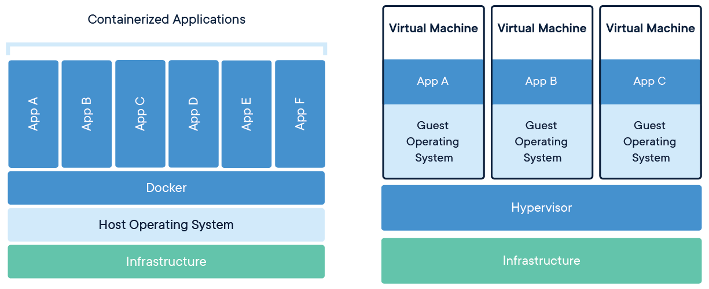

第6回：Dockerの基本とコンテナ化入門
1. はじめに
これまでは EC2（仮想サーバー）を中心に学んできましたが、 最近は「コンテナを実行する基盤」としてECS（特にFargate） がよくつかわれます。
ただし ECS
はサーバーを立てるサービスではなく、コンテナを実行するサービスです。
（※
コンテナが何かは後ほど説明しますが、いったん「アプリを動かすための隔離された実行環境（プロセス）」と思ってください。）
そして、コンテナは“何もない状態”からは起動できず、元になる「コンテナイメージ」というものが必要です。このイメージを作る代表的な仕組みが
Docker です。
そこで今回は、ECS理解の前提となる「Dockerでコンテナイメージを作って動かす流れ」を学習します。
ハンズオンではDockerを操作して「イメージを作り、コンテナを起動し、ログを見て、止めて消す」までを一通り体験します。
Docker自体はAWSサービスではありませんが、この流れを理解しておくと、次回のECS（Fargate）で詰まりやすいポイント（ポート、起動コマンド、ログ確認）が見通せるようになります。
Dockerが分からないと、ECSで起きるトラブルの原因が理解しにくくなります。
- イメージを作れない：Dockerfileが書けないと、ECSに載せるコンテナイメージが作れません。
- 起動失敗の理由が読めない：ECSでタスクが落ちる原因の多くが コンテナ内部の起動コマンド / ポート / 依存関係です（Dockerの知識が必要）。
-
設定の対応関係が見えない：Dockerの
docker runオプションは、ECSの タスク定義（portMappings / env / command 等）と対応します。
なので今回は「ECSを理解するための前提スキル」として、Dockerを先に固めます。
2. ゴール
- コンテナの理解：コンテナの特徴（軽量・移植性・分離）を説明できる
- Dockerの基本要素理解：Dockerfile（設計図）→ Image（成果物）→ Container（実行体）の関係を説明できる
- 基本操作：Dockerfileの基本命令と、docker build / docker run などの基本操作を理解する
- ポート公開：ホストとコンテナの通信（-p の意味）を理解する
3. 解説
3.1 コンテナの特徴
コンテナの3つの特徴である、軽量、移植性(portability)、分離(isolation)について理解すると、なぜコンテナが注目されているのかが分かります。
コンテナの特徴①：軽量（Lightweight）
コンテナは「OSを丸ごと持たない」ことで、軽さと起動の速さを実現しています。
仮想マシンと比較すると、軽さの仕組みを理解しやすいです。

Image credit: Katalon Studio, CC BY-SA 4.0, via Wikimedia Commons
ホストOSのカーネルを共有しつつ、アプリを動かすプロセスを隔離して実行します。
→ メリットOSを起動する必要がなく、アプリのプロセス起動だけで済むため、軽量で起動が速く、同じマシン上で多数のコンテナを動かしやすくなります。
1台の物理サーバーの上に、複数の"仮想的なマシン"を作る仕組みです。それぞれの仮想マシンは自分専用のゲストOSを持ち、ハイパーバイザの上で動きます。
→ OS起動に時間がかかり、OSの分だけ余計なメモリやCPU消費も発生します。
コンテナの特徴②：移植性（Portability）
コンテナの大きな特徴の一つに、移植性（Portability）があります。
移植性とは、作ったアプリを別の環境へ持っていっても、同じように動かしやすい性質のことです。
コンテナでは、アプリを動かすのに必要なライブラリ・設定・実行ファイルなどを、コンテナイメージにまとめて閉じ込めることができます。
そのため、開発PC・検証環境・本番環境など、環境が変わっても同じ実行環境を再現しやすくなります。
一方、従来のようにEC2へ直接ミドルウェアやライブラリをインストールして動かす場合は、次のような差によって挙動が変わり問題となることがあります。
- OSのバージョン差
- 依存ライブラリの差
- 設定ファイルの差
コンテナを利用することで、「開発環境では動いたのに、本番では動かない」問題を減らしやすくなります。
コンテナの特徴③：分離（Isolation）
ここで、もう一つの重要な特徴である 分離（Isolation） を見ていきます。
普通のOSでも、ブラウザやエディタなど複数のアプリを同じOS上で同時に動かせます。
ただし、それらは基本的に 同じOSの世界 を共有しています。
一方コンテナは、同じOS上で動いていても、それぞれが別マシンのような独立した環境を持つように見せる ことができます。
たとえば次のような構成を考えます。
- コンテナA：Webアプリ
- コンテナB：DB
- コンテナC：Nginx
これらは同じOS上で動いていても、それぞれが自分専用のプロセス空間・ネットワーク・ファイルシステムを持つように見えます。
この「互いに影響を与えにくいように分離する仕組み」を隔離（Isolation）と呼びます。
コンテナの隔離はどう実現しているのか
コンテナの隔離は、主にLinuxの次の仕組みで実現されています。
-
Namespaces（見える世界を分ける）
プロセスID、ネットワーク、ユーザー、マウント（ファイルシステム）などを分離し、 コンテナの中からは「自分だけの世界」に見えるようにします。 -
cgroups（使える資源を制限する）
CPU・メモリ・I/Oなどをグループ単位で制限し、「このコンテナが暴走してもホスト全体を巻き込まない」ようにします。 -
Union FS / レイヤー（差分で配布する）
イメージはレイヤーの積み重ねでできています。変更分だけを追加して持てるので、再利用しやすく、配布や更新も効率的です。
これは Docker イメージを軽く配布できる理由の一つです。
Linux上ではコンテナはホストのLinuxカーネルを共有します。一方、Mac/WindowsではそのままではLinuxカーネルが無いので、 Docker Desktop や OrbStack は内部で Linuxの軽量VM を動かし、その中のLinuxカーネルを共有してコンテナを動かします。
なので「コンテナ=OS共有」は原理として正しいのですが、Mac/Windowsでは「Linux VMの中で共有している」と理解すると混乱しません。
- 軽量：OSを丸ごと持たず、プロセス単位で動くためオーバーヘッドが小さい
- 移植性（Portability）：アプリ＋依存ライブラリ＋設定をイメージに閉じ込めるので、 実行環境のズレが起きにくい
- 分離（Isolation）：同じOS上でも、コンテナごとにプロセス・ネットワーク・ ファイルシステムを分離できる
3.2 Dockerの基本
この節では、Dockerを理解するうえで重要な次の3点を整理します。
- Dockerfile / Image / Container の関係
- Dockerfile がどのように書かれるか
- Dockerでよく使う基本コマンド
Dockerの3要素（Dockerfile / Image / Container）
Dockerを学ぶときは、「設計図 → 成果物 → 実行体」の流れで考えると分かりやすいです。
-
Dockerfile：設計図
どんな環境を作り、何を入れ、どう起動するかを書くファイルです。 -
Image：成果物
Dockerfileから作られた、読み取り専用のパッケージです。
配布・再現の単位になります。 -
Container：実行体
Imageを元に起動した、実行中の状態です。
止めたり消したりできます。
つまり、流れとしては次のようになります。
Dockerfileを書く → Imageを作る → ImageをもとにContainerを作成して起動する
DockerにはDockerコマンドがあり、"docker build"でDockerfileからImageを作り、"docker run"でImageをもとにContainerを作成し、そのContainerを起動します。
Dockerfileの例
Dockerfileは設計図と先ほど言いました。設計図に何が書かれるか、Node.js のWebアプリコンテナ化を例として見てみます。
FROM node:20-alpine
WORKDIR /app
COPY package*.json ./
RUN npm install
COPY . .
EXPOSE 3000
CMD ["npm", "start"]Dockerfileに書かれた内容をもとに"docker build"でイメージが作られます。それぞれの行がどのような意味を持つのか見てみましょう。
FROM：ベースになるイメージを指定する命令です。
例では、Node.js 20 が入った軽量な Linux
イメージを土台として使います。
つまり「このイメージを出発点にして、自分のコンテナイメージを組み立てる」という意味です。
※ イメージはどこから取得されるのかは後ほど説明します。
WORKDIR：コンテナ内の作業ディレクトリを指定する命令です。
例では、作業場所を /app に設定しています。以降の
COPY や
RUN は、このディレクトリを基準に実行されます。
COPY：ローカルのファイルをコンテナ内へコピーする命令です。
例では、まず package.json /
package-lock.json
をコピーし、その後でアプリ本体のソースコードをコピーしています。
依存関係の定義ファイルを先にコピーするのは、Docker のビルドキャッシュを効かせやすくするためです。
RUN：イメージを作る途中でコマンドを実行する命令です。
例では、npm install
を実行して依存ライブラリをインストールしています。
EXPOSE：このコンテナがリッスンする想定のポートを示す命令です。
例では、アプリが 3000 番ポートを使う前提で設定しています。
ただし、これだけで外部公開されるわけではなく、実際にホストからアクセスするには
docker run -p が必要です。
CMD：コンテナ起動時にデフォルトで実行するコマンドを指定する命令です。
例では、コンテナ起動時に
npm start を実行してアプリを立ち上げます。
まとめると、さきほどの例では、次の流れでコンテナを作っています。
- Node.js が入ったイメージを土台にする
- コンテナ内の作業ディレクトリを
/appにする - 依存関係の定義ファイルをコピーする
npm installでライブラリを入れる- アプリ本体をコピーする
- 3000番ポートを使うことを示す
- 起動時に
npm startを実行する
RUN と CMD は役割が違います。
- RUN：イメージを作る途中で実行する
- CMD：コンテナを起動したときに実行する
この違いは最初に混同しやすいので、意識しておくと理解しやすいです。
イメージはどこから来るのか
FROM で指定したイメージは、イメージの保存場所（レジストリ）から取得します。
Dockerで何も指定しない場合、通常は Docker Hub という公開レジストリを見に行きます。
たとえば、次の指定を見てみます。
FROM node:20-alpineこれは次の意味です。
-
node
使うイメージの名前です。ここでは Node.js が入ったイメージを指します。 -
20-alpine
イメージのタグです。
ここでは「Node.js 20系」かつ「Alpine Linux ベース」の軽量版を使う、という意味です。
つまりこの1行は、
「Docker Hub にある node イメージの 20-alpine タグを土台として使う」
という指定になります。
Dockerイメージ関連用語
レジストリ（Registry）
Dockerイメージを保存・配布する場所です。
例：
- Docker Hub
- Amazon ECR
- GitHub Container Registry
リポジトリ（Repository）
レジストリの中で、関連するイメージをまとめて管理する単位です。
たとえば node は、Node.js イメージのリポジトリです。
タグ（Tag）
同じリポジトリの中で、バージョンや種類を区別するための名前です。
例：
latest2020-alpine
Dockerコマンド
ここでは、Dockerでよく使う基本コマンドを見ておきます。
ハンズオンでも、主にこれらのコマンドを使います。
docker build
Dockerfile をもとに Image を作成します。
docker build -t my-web-app .-t：イメージに名前（タグ）を付ける-
.：Dockerfile がある場所（カレントディレクトリ）を指定する
docker images
作成済みの Image 一覧を表示します。
docker imagesdocker run
Image をもとに Container を作成して起動します。
docker run -d -p 8080:80 --name my-container my-web-app-d：バックグラウンド実行-
-p 8080:80：ホストの8080番ポートをコンテナの80番ポートへつなぐ --name：コンテナに名前を付ける
docker ps
現在動いている Container の一覧を表示します。
docker psdocker logs
Container のログを表示します。
docker logs my-containerアプリが起動しているか、エラーが出ていないかを確認するときに使います。
docker exec
起動中の Container の中でコマンドを実行します。
docker exec -it my-container shコンテナ内部に入って、ファイルの配置や状態を確認したいときに使います。
docker stop
起動中の Container を停止します。
docker stop my-containerdocker rm
停止済みの Container を削除します。
docker rm my-containerdocker rmi
Image を削除します。
docker rmi my-web-appこの節で特に押さえたいのは、次の3点です。
- Dockerfile は Image の作り方を書くファイルである
- Image は成果物、Container は実行中の状態である
- Docker は build → run → logs / ps / exec → stop / rm の流れで操作することが多い
3.3 ポート公開（-p オプション）
コンテナの中の世界とホストPCは隔離されています。そのため、コンテナ内部のWebサーバー（例：80番）へ
ホストPCからアクセスするには、ホスト側へポートを公開する必要があります。それが
-p オプションです。
-p の書式は、ホスト側ポート:コンテナ側ポート です。
# 例
docker run -p 8080:80 ...
例では、ホストPCの8080番ポートを、コンテナの80番ポートへつなぐ指定になっています。
これによって、ホストPCのブラウザで http://localhost:8080
にアクセスすると、コンテナ内のWebサーバー（80番）へリクエストが届くようになります。
- Docker：
docker run -p 8080:80 ... - ECS：タスク定義の portMappings（containerPort / hostPort）に相当
3.4 Docker Compose（発展）
ここまでは、docker build や docker run を使って、1つのコンテナを作って起動する流れを見てきました。
ただし実際の開発では、Webアプリ + DB のように、複数のコンテナをまとめて扱いたい場面がよくあります。
そのようなときに使うのが Docker Compose です。
Docker Compose は、複数コンテナの構成を1つのファイルにまとめて定義し、まとめて起動・停止できる仕組みです。Compose ファイルでは、アプリケーションを services などの要素で定義します。docker compose up はサービスをビルド・（再）作成・起動し、docker compose down はコンテナやネットワークを停止・削除します。
Docker Compose を使う目的
Docker Compose を使う主な目的は、複数コンテナをまとめて管理しやすくすることです。
たとえば、アプリを動かすのに次のような構成が必要だとします。
- Webアプリ
- データベース
- キャッシュサーバー
このような場合、docker run を何度も実行して1つずつ起動するより、
1つの Compose ファイルにまとめて書き、docker compose up でまとめて起動する方が分かりやすく、再現もしやすくなります。
よくある compose.yaml の例
たとえば、Webアプリ + DB のような構成は、次のように書けます。
services:
web:
build: .
ports:
- "8080:3000"
depends_on:
- db
db:
image: postgres:16-alpine
environment:
POSTGRES_PASSWORD: example
POSTGRES_DB: sample
volumes:
db-data:このファイルが意味すること
この例では、次のようなことを定義しています。
services
起動したいコンテナの一覧です。
この例では web と db の2つのサービスがあります。
web
build: . と書いているので、今いるディレクトリの Dockerfile を使って web 用イメージを作成します。
ports では、ホストの8080番ポートを、コンテナの3000番ポートに公開しています。
depends_on では、db サービスに依存していることを示しています。
db
image: postgres:16-alpine とあるので、Docker Hub などのレジストリから PostgreSQL イメージを取得して使うことを意味します。
environment では、コンテナに渡す環境変数を指定しています。
volumes
永続化に使うボリュームを定義できます。
たとえばDBコンテナを再作成しても、データを残したいときに使います。Compose ファイルでは volumes もトップレベル要素として定義できます。
docker compose up で何が起きるのか
この compose.yaml があるディレクトリで、次のコマンドを実行します。
docker compose up -d
すると、Compose はファイルの内容を読み取り、必要ならイメージをビルド / pull し、ネットワークを作成し、複数のコンテナをまとめて起動します。docker compose up は、サービスのビルド、（再）作成、起動、アタッチまでを行います。
この例では、概ね次の流れになります。
web用イメージを Dockerfile から build するdb用に PostgreSQL イメージを取得するwebとdbが通信できるネットワークを作るwebコンテナとdbコンテナを起動する
つまり、複数コンテナの構成全体を1回で立ち上げられるのが Compose の大きな利点です。
停止・削除するとき
Compose で起動したコンテナ群を止めるときは、次を使います。
docker compose down
docker compose down は、Compose で作成したコンテナやネットワークを停止・削除します。なお、名前付きボリュームは -v を付けたときに削除されます。
第6回の段階では、Docker Compose は次のように理解すれば十分です。
docker run：1つのコンテナを起動するdocker compose up：複数のコンテナ構成をまとめて起動する
今回はハンズオンをシンプルにするため、docker run を中心に進めます。
ただし、実務では Web + DB + キャッシュ のような構成が多いため、Docker Compose もよく使われます。Compose は Docker CLI の一部として提供されており、Compose ファイル名としては compose.yaml が標準的です。
4. ハンズオン（Hands-on）
まずは「Dockerの仕組み」を学ぶことに集中するため、アプリは最小の静的HTMLにします。 nginx を使うので、言語の依存関係エラーに悩まされにくい構成です。
Step 0: Docker をインストール & 動作確認
ローカル環境で Docker を使うには、Docker Desktop をインストールします。
Docker Desktop は、Mac・Windows で Docker を動かすための公式アプリです。
インストールするだけで docker コマンドが使えるようになります。
-
Docker Desktop
をインストールして起動します（初回は権限許可が求められることがあります）。
※ Windowsの場合、インストール後に案内に従ってWSL2を有効化してください。 - ターミナルで以下を実行します。
docker version
・Dockerのバージョン情報が表示されます。Client / Server の両方が表示されればOKです。
docker pull hello-world
・Docker Hub から hello-world イメージを取得します。
docker images
・hello-world イメージがあることを確認します。
docker run --rm hello-world
・hello-world イメージからコンテナを作成して起動します。
Hello from Docker! のメッセージが出ればOKです。
--rm は、実行終了後にそのコンテナを自動削除するオプションです。
- docker コマンドが見つからない：Docker Desktop の起動とPATHを確認します（再起動で直ることもあります）。
Step 1: 作業用ディレクトリとindex.htmlの準備
docker-intro/ └─ index.html
最初に作業用ディレクトリ
docker-intro を作成してください。
※ ディレクトリは任意の名前で構いませんが、この資料では docker-intro で進めます。
index.html を作成し(以下コピー)、docker-intro ディレクトリに保存します。
<!DOCTYPE html>
<html lang="ja">
<head>
<meta charset="UTF-8" />
<meta name="viewport" content="width=device-width, initial-scale=1.0" />
<title>Hello Docker</title>
</head>
<body>
<h1>Hello Docker World</h1>
<p>This page is served from inside a container.</p>
</body>
</html>
Step 2: Dockerfile の作成
docker-intro/ ├─ index.html └─ Dockerfile ※ 追加
Dockerfile を作成します。
エディターなどでDockerfileという名前のファイルを作成してください。拡張子は必要ありません。ファイルには以下をコピーして保存します。
FROM nginx:alpine
COPY index.html /usr/share/nginx/html/index.html
これで「nginx:alpine イメージを土台にして、index.html を nginx の公開ディレクトリへコピーする」という設計図ができました。
-
FROM：ベースになるイメージ（材料）を指定します -
COPY：ホストのファイルを、イメージ内にコピーします
Step 3: イメージのビルド（Build）
docker-intro
ディレクトリに移動してから、以下コマンドを実行します。
※ 以降のコマンドも同じディレクトリで実行してください。
docker build -t my-web-app .ビルドするイメージには my-web-app という名前をつけています。
-t：イメージに名前（タグ）を付けます-
最後の
.：Dockerfile を探す場所（カレントディレクトリ）です
ビルド後、イメージ一覧から my-web-app を確認します。
docker imagesStep 4: コンテナの起動（Run）
docker run -d -p 8080:80 --name my-container my-web-app-d：バックグラウンド実行-
-p 8080:80：ホスト8080番 → コンテナ80番へ転送 -
--name：コンテナに名前を付ける（ログや操作が楽になります）
稼働状況を確認します。
docker psStep 5: 動作確認
ブラウザで
http://localhost:8080
にアクセスし、HTMLが表示されれば成功です。
以下を実行します。
docker exec -it my-container shこれで、コンテナの中のシェルに入れます。
その状態で、次を実行して配置されたファイルを確認します。
ls -la /usr/share/nginx/html確認できたら、次でコンテナの中から抜けます。
exitログを確認します。
docker logs my-containerStep 6: 変更と再ビルド（イメージの不変性を体験）
VS Codeで
index.html
の中身を書き換えて保存してください（例：Hello Docker World v2）。
ブラウザをリロードしても表示が変わらないことを確認します。
これは「すでに起動中のコンテナは、過去に作ったイメージを元に動いているため」です。
反映させるには「止める→消す→作り直す」が必要です。
docker stop my-container
docker rm my-container
docker build -t my-web-app .
docker run -d -p 8080:80 --name my-container my-web-app
もう一度
http://localhost:8080
を開き、変更が反映されればOKです。
Dockerでは、ホストPCのファイルをコンテナにそのまま見せる方法もあります。 この方法を使うと、HTMLを編集してすぐに反映できるため、開発では便利です。 ただし今回は、まず「イメージは不変であり、変更を反映するには再ビルドが必要」という基本を理解することを優先します。 そのため、このハンズオンではあえて再ビルドの流れを体験しています。 この考え方は、ECSで新しいイメージを作って差し替える流れにもつながります。
Step 7: 後片付け
docker stop my-container
docker rm my-container
docker rmi my-web-app-
ポートが使用中（Address already in use）：8080が埋まっているので、
-p 8081:80のように変えて試してください。 -
コンテナ名が重複：
--name my-containerが残っている場合はdocker rm my-containerで消します。 -
ログを見たい：
docker logs my-containerで確認できます。
5. 次の一歩（AWSへの接続）
今回ローカルで作った「イメージ」を、次回はAWSに持っていきます。流れは次の通りです。
- ECR：作ったイメージを保存する場所（「Dockerイメージのレジストリ」）
- ECS（Fargate）：そのイメージを使ってコンテナを実行・管理する
- Dockerfile：ECSで動かすコンテナの「中身（実行環境）」を作る元になる
- Image：ECRに置いて、ECSが取得して起動する“成果物”
- docker run の考え方：ECSの「タスク定義（起動方法の設定）」に置き換わる
✅ Docker（ローカル）→ ECS（AWS）の対応表（次回のチートシート）
| ローカルDocker | 役割 | ECS（次回）での対応 |
|---|---|---|
| Dockerfile | コンテナの中身を定義 | 同じ（イメージ作成の元） |
| docker build | イメージを作る | ビルドしてECRにpush |
| Image（タグ） | 配布する成果物 | ECRのリポジトリ（イメージURI） |
| docker run | コンテナを起動 | タスク定義 + サービス（またはRunTask） |
| -p 8080:80 | ポートを外に公開 | portMappings +（必要なら）ALB |
| docker logs | ログを見る | CloudWatch Logs |
| docker exec（任意） | 中に入って確認 | ECS Exec（設定すれば） |
次回は「ローカルで
docker run していた部分を、AWSでは
タスク定義 に書き換える」と考えると理解しやすいです。
6. まとめ
今回は、Dockerの基本として次の点を確認しました。
- コンテナは、OSを丸ごと持つ仮想マシンとは異なり、ホストOSのカーネルを共有しながら動く
- Dockerでは、Dockerfile → Image → Container の流れでコンテナを作成・実行する
-
docker buildやdocker runなどの基本コマンドを使って、イメージ作成から起動、確認、削除までの流れを体験する -
-pにより、ホストPCからコンテナ内のサービスへアクセスできる - 変更を反映するには、イメージを作り直してコンテナを起動し直す、という考え方が基本になる
次回は、今回ローカルで行った「イメージを作って動かす流れ」をAWS上に広げ、ECR と ECS（Fargate） を使ってコンテナを実行していきます。